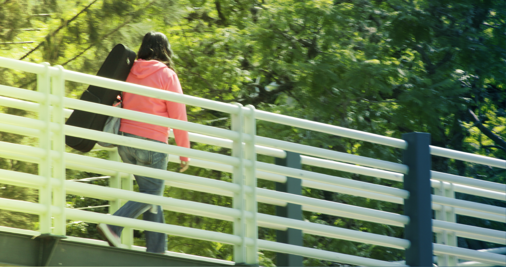

Reporte IFCS · Índice de Factibilidad de Cruce Seguro
Reporte de factibilidad del puente
Este puente antipeatonal tiene de ser retirado y sustituido por un cruce peatonal seguro.
Puntaje IFCS · de 0 a 100
Factibilidad
Enlace permanente
Guarda este enlace para volver a ver el reporte
Regenera el diagnóstico, las propuestas y el PDF con los datos guardados. Puedes compartirlo con quien necesite consultarlo.
No encontramos una evaluación guardada para este enlace. Revisa que esté completo o haz una nueva evaluación.
01
Diagnóstico general
El puente antipeatonal ubicado en la vialidad de , próximo a de la Ciudad de , es técnicamente factible a retirarse y sustituirse por un cruce peatonal seguro , esto debido a:
Las características de la vialidad:
La presencia de equipamientos:
- Existe un equipamiento de a una distancia de , lo cual justifica la reducción de velocidad en el entorno próximo al puente AntiPeatonal.
Las características del puente:
02
Propuestas de rediseño para la sustitución del puente antipeatonal
Recomendaciones generales basadas en normatividad mexicana vigente, generadas a partir de tu evaluación.
Normatividad referenciada
Las propuestas de rediseño aquí planteadas son de carácter general y tienen el objetivo de brindar una fundamentación técnica y jurídica para sustentar la sustitución de un puente antipeatonal por un cruce seguro, sin embargo, deberán realizarse revisiones puntuales y propuestas específicas antes de su implementación.
03
¡Digamos #AdiósPuentesAntipeatonales!
La transición hacia ciudades caminables se debe realizar de manera paulatina, tomando en cuenta las características actuales del entorno y su capacidad de adecuarse con el fin de brindar seguridad a todas las personas peatonas.
